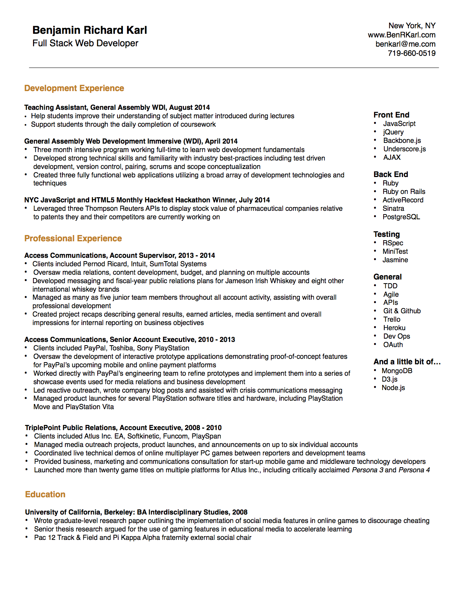

About Me:
My engineering adventure started many years ago...I've been comfortably adept with technology my entire life, starting somewhere around the age of thirteen when I built my first PC to play Half-Life: Counter Strike, (a game I later studied for a graduate-level research project). In college I studied mathematics to stay close to computer science while focusing my time on athletics. I later transitioned to Interdisciplinary Studies in order to study technology from a more sociological perspective. In 2011 and 2012 I managed the development of several interactive proof-of-concept prototypes to demonstrate PayPal's new mobile payment applications to business and technology reporters.
In 2014, inspired by my experience working with PayPal's engineering team, I decided to pursue my passion for technology and building things full time. Since then I've graduated from General Assembly's Web Development Immersive program, where I continue to work day-in and day-out to learn everything I can about how to build web applications. My time with GA has provided me with extensive exposure to Ruby and JavaScript, frameworks like Rails and Sinatra, testing suites like rSpec, MiniTest and Jasmine, as well as other tools likejQuery, jQuery UI, Backbone.js, Node.js, Express, MongoDB, and more.
I'm extremely enthusiastic about technology and I love pouring my heart into projects that make a difference in people's lives. I think that you would love working with me, so please reach out if you have any questions, comments, or if you just want a little fantasy football advice.
Please feel free to download a copy of my resume as a pdf. For questions or references check out my contact page and drop me a line!
Look Up!
Look Up is a visual representation of the positions of the planets in the solar system relative to the surface of the Earth. The app pulls user information from their browser, renders their latitude and longitude as the blue dot on the globe, then sends the information to the Astronomy API to get data about the planets, which is rendered on the globe. This app uses Rails as a server proxy for the Astronomy API, Backbone.js to organize the planetary data on the client-side, and D3.js to render the visualization.

Wondering if Saturn is visible right now? Just "Look Up!"
Coverage Reportr
Coverage Reportr is an application designed to make coverage reporting easier for the Public Relations industry. Historically compiling and organizing a coverage report required lots of time and lots of Excel, but now you can do your coverage reports quickly and easily with Coverage Reportr!
After entering a URL, Coverage Reportr uses two APIs (AlchemyAPI and Nokogiri) to parse the article for key metadata including the author's name, title, and - most importantly - the tone of the language.
You can see here the article has been entered to an online coverage report that you can share with other users and export into .csv.
Job Board
At General Assembly there's a job board prominently displayed in the lobby of both of the main offices where students, alumni and friends can share notes about opportunities they are seeking or offering. It's very analog, so my team decided to put it online and give it a few additional features to help connect people more easily.
Here's the main job board, styled to look exactly as it appears in real life. Users can create an account with their LinkedIn account or their email address. The cards can be dragged and dropped anywhere on the board with the use of jQuery UI and we use Ajax to save the position of the card to the database. If someone 'Likes' your card you'll recieve a notification in your profile.